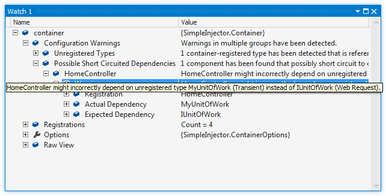

Diagnostic Warning - Short Circuited Dependencies¶
Cause¶
The component depends on an unregistered concrete type and this concrete type has a lifestyle that is different than the lifestyle of an explicitly registered type that uses this concrete type as its implementation.
Warning Description¶
This warning signals the possible use of a short circuited dependency in a component. A short circuited dependency is:
- a concrete type
- that is not registered by itself
- that is referenced by another component (most likely using a constructor argument)
- and exists as TImplementation in an explicitly made Register<TService, TImplementation>() registration (or its non-generic equivalent)
- and where the lifestyle of this explicit registration differs from the unregistered type (in normal cases this means that the explicit registration is not Transient)
When a component depends on a short circuited dependency, the application might be wired incorrectly because the flagged component gets a different instance of that concrete type than other components in the application will get. This can result in incorrect behavior.
How to Fix Violations¶
Let the component depend on the abstraction described in the warning message instead of depending directly on the concrete type. If the warning is a false positive and the component (and all other components that depend directly on this concrete type) should indeed get a transient instance of that concrete type, register the concrete type explicitly in the contain using the transient lifestyle.
When to Ignore Warnings¶
Do not ignore these warnings. False positives for this warning are rare and even when they occur, the registration or the application design can always be changed or the concrete type can be registered explicitly in the container.
Example¶
var container = new Container();
container.RegisterPerWebRequest<IUnitOfWork, MyUnitOfWork>();
container.Register<HomeController>();
// Definition of HomeController
public class HomeController : Controller {
private readonly MyUnitOfWork uow;
public HomeController(MyUnitOfWork uow) {
this.uow = uow;
}
}
In this example HomeController depends on MyUnitOfWork. MyUnitOfWork however is not registered explicitly, but IUnitOfWork is. Furthermore IUnitOfWork is registered with the WebRequestLifestyle. However, since MyUnitOfWork is a concrete unregistered type, the container will create it on your behalf with the Transient lifestyle. This will typically be a problem, since during a request, the HomeController will get a different instance than other types that depend on IUnitOfWork while the intended use of IUnitOfWork is to have a single instance per web request.
For Unit of Work implementations this is typically a problem, since the unit of work defines an atomic operation and creating multiple instances of such a unit of work in a single web request means that the work is split up in multiple (database) transactions (breaking consistency) or could result in part of the work not being committed at all.
The MyUnitOfWork type is called ‘short circuited’ because HomeController skips the IUnitOfWork dependency and directly depends on MyUnitOfWork. In other words, HomeController short circuits to MyUnitOfWork.
Here is an example of a short circuited dependency in the watch window:
The following example shows how to query the Diagnostic API for Short Circuited Dependencies:
// using SimpleInjector.Diagnostics;
var container = /* get verified container */;
var results = Analyzer.Analyze(container)
.OfType<ShortCircuitedDependencyDiagnosticResult>();
foreach (var result in results) {
Console.WriteLine(result.Description);
Console.WriteLine(
"Lifestyle of service with the short circuited dependency: " +
result.Relationship.Lifestyle.Name);
Console.WriteLine("One of the following types was expected instead:");
foreach (var expected in result.ExpectedDependencies) {
Console.WriteLine("-" + expected.ServiceType.FullName);
}
}